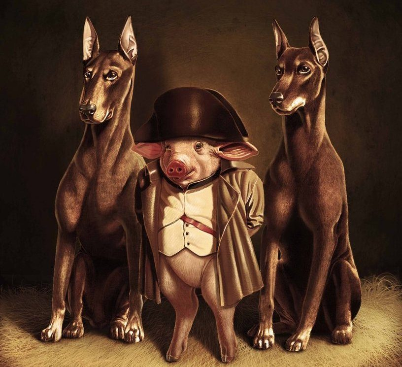
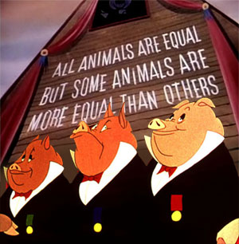
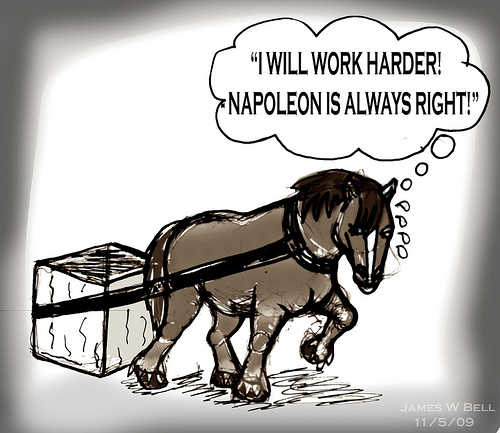
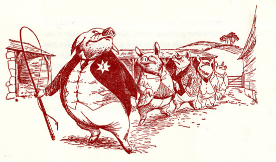

Animal Farm Stuff
By:Anya

In the book Animal Farm, Squealer and Napoleon are constantly accompanied by dogs so the other animals fear them and no one gets any ideas of rebeling against them

The picture above is an example of false equality that took place in the hierarchy of Animal Farm

Above are the two statements that Boxer thrives with. Even though he seems like the most loyal animal and is thought to be dumb, he questioned Squealer once which unfortunately had him killed.

After Squealer is told to be teaching the sheep a 'new song', the animals later find out they instead of saying '4 legs good 2 legs bad' they now say '4 legs good 2 legs better'. Then the pigs start walking on two legs and holding whips. This is near the end of the book when the pigs basically become the new Mr. Jones.